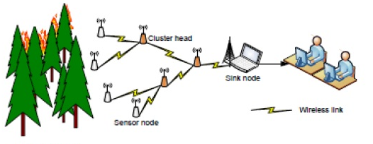

无线传感器网络(Wireless Sensor Networks, WSN)是一种分布式传感网络，它的末梢是可以感知和检查外部世界的传感器。WSN中的传感器通过无线方式通信，因此网络设置灵活，设备位置可以随时更改，还可以跟互联网进行有线或无线方式的连接。通过无线通信方式形成的一个多跳自组织网络。
WSN广泛应用于军事、智能交通、环境监控、医疗卫生等多个领域。
无线传感器网络：
无线感测器网络将是未来实现智慧工厂的重要利器。主要体现在将传感器采集到的数据通过无线技术上传到云端，生产设备将不再是过去单一而孤立的个体。通过云端的数据展现，全世界的专家学者依据知识和经验，进行推理和判断，及时作出决策，使得仪器仪表实现高速、高效、多功能、高机动灵活等性能。
根据无线网络获取的植物生长环境信息，如各种传感节点采集到的数据（环境温湿度、土壤水分、二氧化碳等），和无线通信网络实现农业生产环境的智能感知、智能预警、智能决策、智能分析、专家在线指导，为农业生产提供精准化种植、可视化管理、智能化决策。
在牧业无线传感器的解决方案中，在羊的脖子上装配带ID功能的芯片，记录羊只信息。芯片含有运动传感器，可以感知羊群的活动，如羊的运动状况、睡眠状况等，甚至可以通行为对比分析出一只羊是否得病。应用无线网络和网关技术，将记录结果回传到牧业物联网平台，最终传送到电商系统中，从而实现了“羊的联网”。